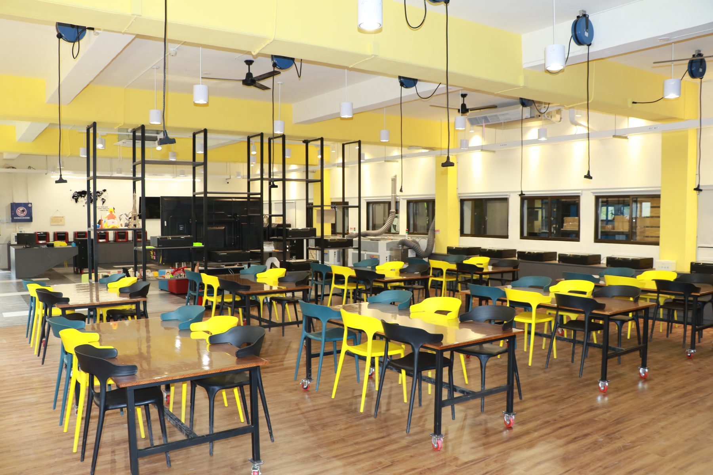
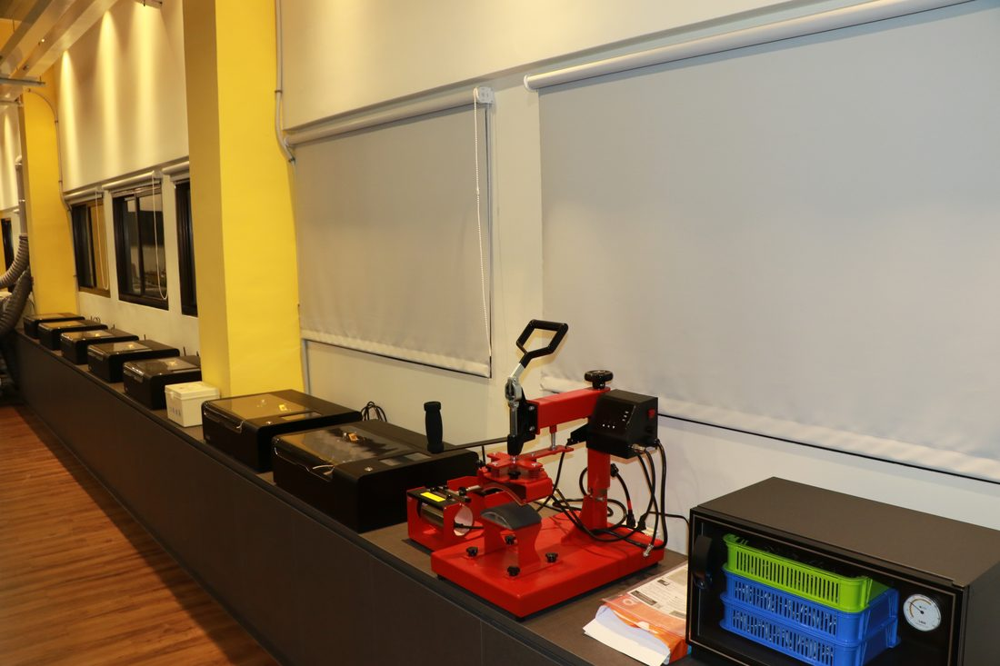
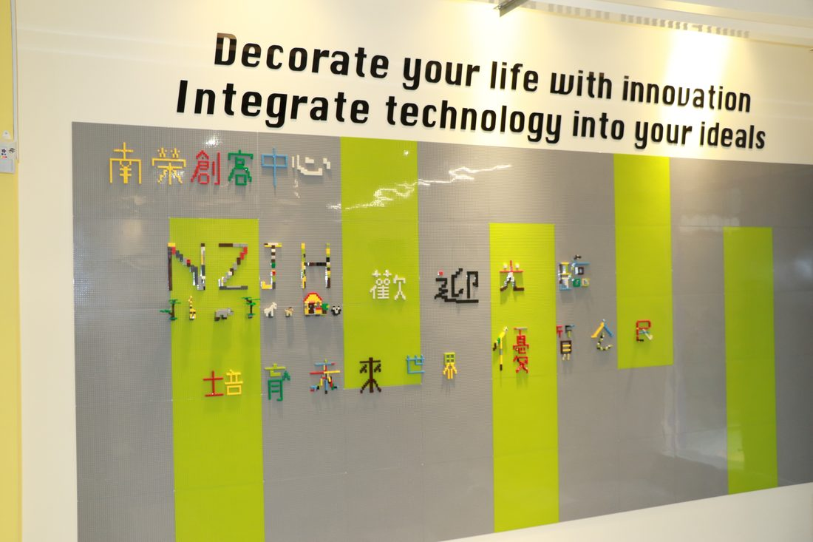
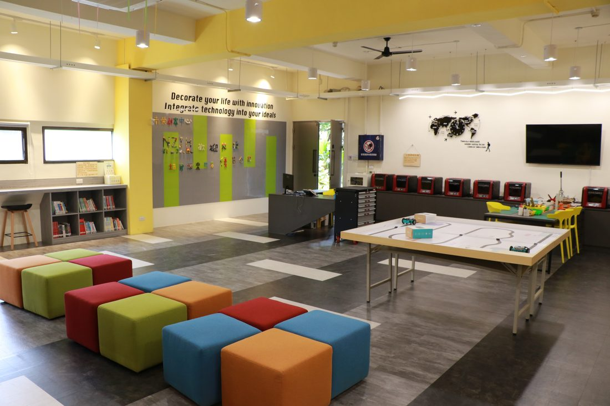
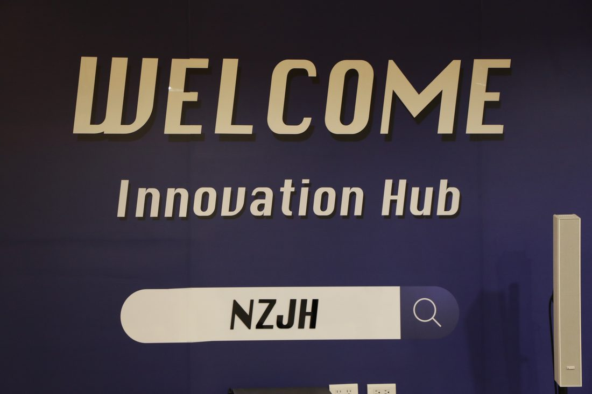
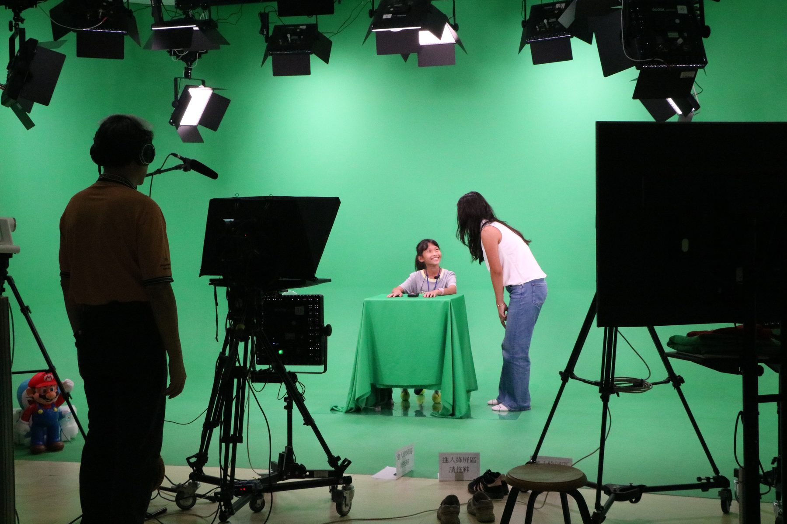
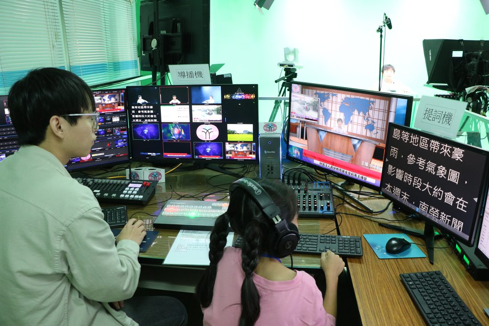
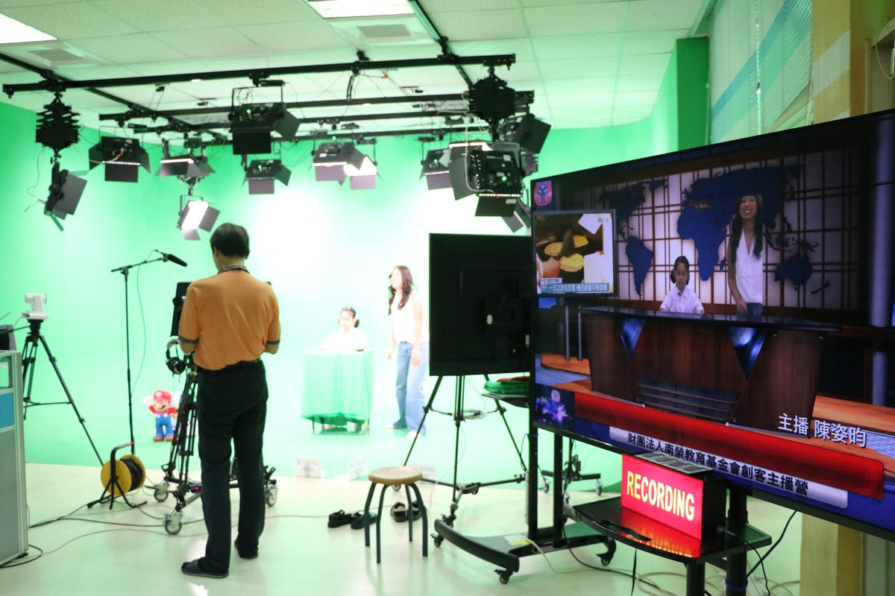
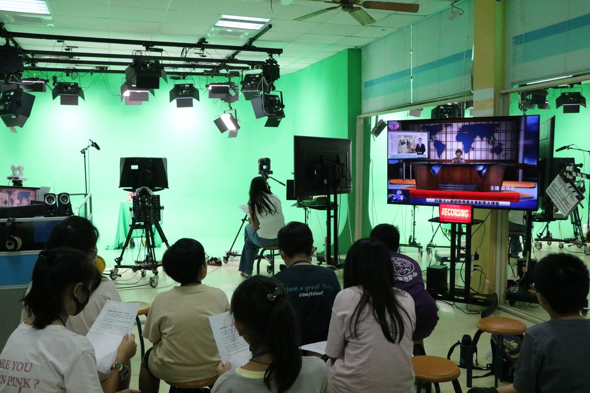
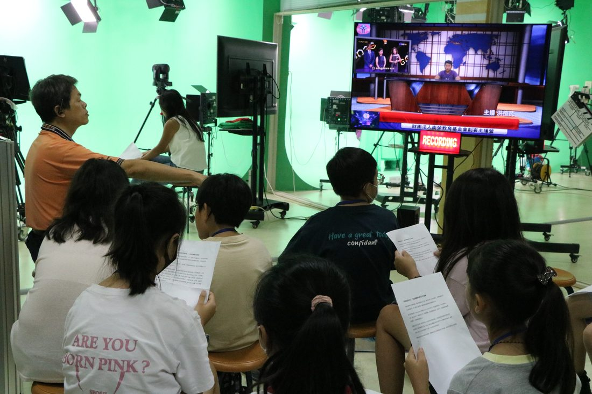

Make with your hands · Speak to the world手でつくり、世界へ語る
Beside the classrooms and the concert hall, Nan Jung gives its students two modern spaces to imagine boldly and build for real — an Innovation Hub for hands-on making, and a Digital Studio for media and the courage to be seen.
教室や演奏ホールのとなりに、南榮は生徒のための現代的な二つの空間を用意しています。手でものをつくる「創客（メイカー）センター」と、メディアと「人前に立つ勇気」を育てる「デジタル・スタジオ」です。
The Innovation Hub opens — 3D printers & laser engravers創客センター開設 — 3Dプリンターとレーザー彫刻機
The Digital Studio opens — a full green-screen broadcast setデジタル・スタジオ開設 — 本格的なグリーンバック放送設備
Science, math, computing & art — learned by doing理科・数学・情報・芸術を、実践から学ぶ

Innovation Hub · Opened 2020創客センター・2020年開設
“Decorate your life with innovation; weave technology into your ideals.”
Opened in 2020 to answer Taiwan's new technology-education curriculum, the Innovation Hub gives students the tools to make. With 3D printers and laser engravers, a flat design on screen becomes a real object you can hold — and students learn first-hand how technology shapes everyday life.
Learning here is project-based: students combine science, math, computing and art, then design, build and refine until the work is their own. The real lesson is courage — the willingness to try, to fail, and to make it better.
「革新で人生を彩り、技術を理想に織り込む。」
2020年、台湾の新しい科学技術教育カリキュラムに応えて開設。3Dプリンターやレーザー彫刻機を備え、画面上の設計図が、手に取れる実物の作品へと変わります。生徒は、技術が日常をどう形づくるのかを自らの手で学びます。
学びはプロジェクト型。理科・数学・情報・芸術を組み合わせ、設計し、つくり、改良を重ねて自分だけの作品を完成させます。一番のねらいは「挑戦する勇気」。試し、失敗し、より良くしていく力を育てます。

What's inside設備
3D printers turn a digital design into a solid object students can hold. Laser engravers cut and engrave wood, acrylic and more with precision, for work that is truly one of a kind. Around them, bright open benches and a world-map mural invite students to gather, sketch and build together.
3Dプリンターは、デジタル設計を手に取れる立体作品へと造形します。レーザー彫刻機は、木材やアクリルなどを精密に切断・彫刻し、唯一無二の作品を生み出します。明るく開かれた作業台と世界地図の壁が、生徒たちが集い、描き、ともにつくることを誘います。
Inside the Hub創客センターの中へ




Digital Studio · Opened 2022デジタル・スタジオ・2022年開設
In this studio, no one fears failure — there are only people willing to try and grow.
In the Digital Studio, students become hosts, news anchors, directors and camera operators. With a teleprompter, broadcast cameras, studio lighting, a vision mixer and full audio, the room is a real, working media environment — not a simulation.
Opened in 2022, its deeper purpose is confidence. Facing a camera for the first time is nerve-wracking — but take after take, students overcome stage fright and learn to say clearly what they think. Through the lens, they see the world — and let the world see them at their best.
このスタジオに、失敗を恐れる人はいません。挑戦し、成長する人がいるだけです。
デジタル・スタジオでは、生徒が司会者・キャスター・ディレクター・カメラマンになります。プロンプター、放送用カメラ、スタジオ照明、スイッチャー、音響設備を完備した、本物の制作現場です。
2022年に開設。真のねらいは「自信」を育てること。初めてカメラの前に立てば誰でも緊張します。けれど撮影を重ねるうちに、生徒は不安を乗り越え、自分の考えを堂々と語れるようになります。レンズを通して世界を見つめ、そして世界に、最高の自分を見せるのです。

Behind the broadcast放送の裏側
A teleprompter helps presenters read their script and speak to camera with ease. A vision mixer switches live between cameras, so students learn how a broadcast is really made. With professional lighting, cameras and audio, every recording is a chance to challenge themselves — and to grow.
プロンプターは、原稿をスムーズに読み、落ち着いてカメラに語りかける助けになります。スイッチャー（導播機）で複数のカメラを生で切り替え、番組制作の裏側を学びます。プロ仕様の照明・カメラ・音響のもと、一回一回の収録が、自分に挑み、成長する機会になります。
On Airオンエア



From the workbench to the camera, students at Nan Jung learn to imagine boldly, make with their hands, and speak with confidence.
作業台からカメラの前まで。南榮の生徒は、大胆に発想し、自らの手でつくり、自信をもって語ることを学びます。